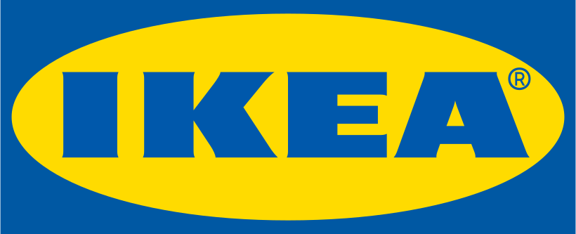

Atelier : le brief déconstruit
Brief d’IKEA France : « Nos clients de 18-25 ans ne reviennent pas après leur premier emménagement. On veut une carte étudiante à −10 %. »

01
Ce que dit le brief
Les 18-25 ans achètent chez IKEA pour leur premier logement, puis ne reviennent plus. IKEA pense qu’une carte étudiante à −10 % les fera revenir.
Le brief donne une solution, pas un problème.
02
L’objectif business
Rester leur enseigne jusqu’au prochain emménagement.
- À mesurer : la part des 18-25 ans qui rachètent dans les 12 mois après leur premier achat.
- L’enjeu : 79 % des ménages de moins de 30 ans sont installés depuis moins de 4 ans, dans un marché en recul (−1,8 % en 2025).
03
Les cibles pressenties
Les 18-25 ans étudiants, au moment de leur premier emménagement.
- Hypothèses non prouvées : ils sont tous étudiants, ils partent à cause du prix, ils ont encore besoin de meubles ensuite.
- Angle mort : les alternants, les apprentis et les jeunes actifs.
04
Le terrain concurrentiel
- Directs : Conforama, But, Maisons du Monde, Action, les marketplaces en ligne.
- Indirects : la seconde main (1 meuble sur 4 vendu d’occasion en France*), les meubles récupérés, les logements meublés.
- IKEA lui-même : IKEA Family existe déjà.
05
Contraintes et risques
- Budget : −10 % aussi sur les achats qui auraient eu lieu sans remise.
- Délais : tout doit être prêt avant la rentrée.
- Image : une remise sur une marque déjà perçue comme pas chère.
- Éthique : données sur le statut étudiant (RGPD), non-étudiants exclus, meubles jetables.
06
Les questions à creuser
- Les 18-25 ans rachètent-ils vraiment moins ?
- Pourquoi partent-ils : prix, distance, occasion ?
- Quelle part des 18-25 ans est étudiante ?
- −10 % pèse-t-il face au coût de livraison ?
- À revérifier : mobilité, occasion, IKEA Family.
Sources : « Lire un brief IKEA – V2 », p. 2-3 (13/10/2026) · Insee Première n°2090 (01/2026) · IPEA / CNEF / Ameublement français (03/02/2026). * Chiffre repris du brief, source à revérifier.
Concept académique indépendant, non affilié à IKEA · B3CPD, équipe Loris Demeaux, Tobias Ringot, Eliott Haudiquert · Analyse préparée avec l’aide de l’IA.